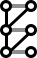
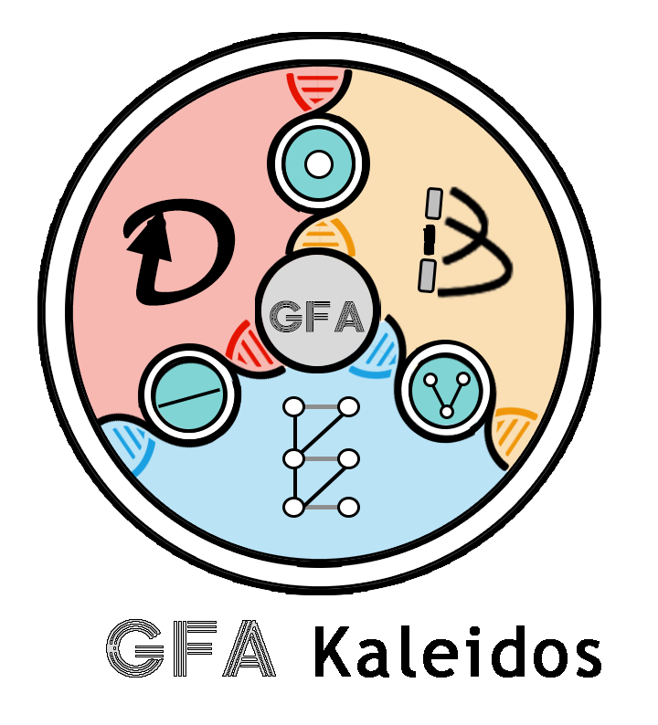
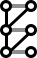

| Digraph | BidirectedGraph |  BiedgedGraph |
|---|

| Digraph | BidirectedGraph |  BiedgedGraph |
|---|
Don't want to wait for the upload of a large GFA file? Run an locally to obtain the outputs and .
| GFA | Digraph | Bidirected Graph |
Biedged Graph |
|---|